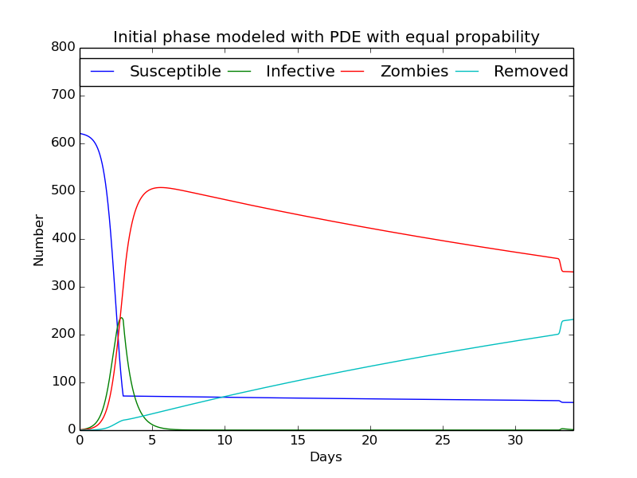
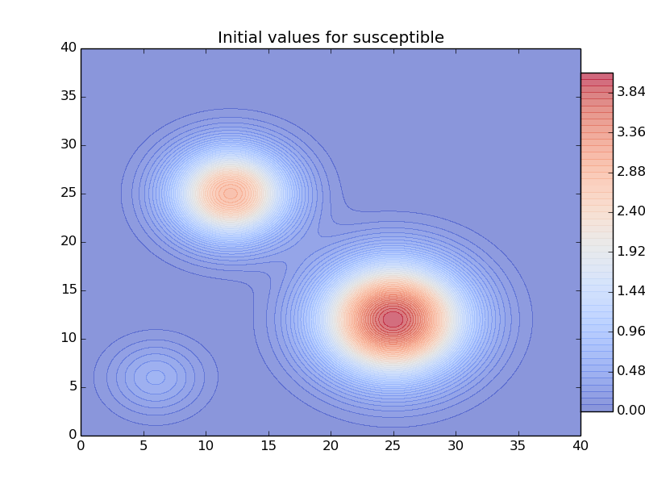
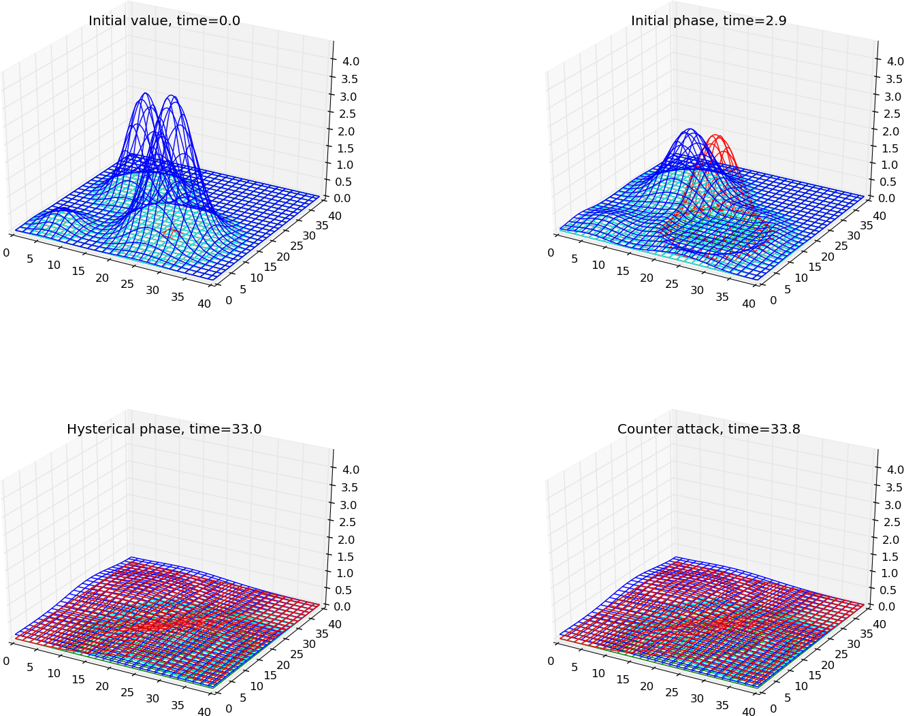
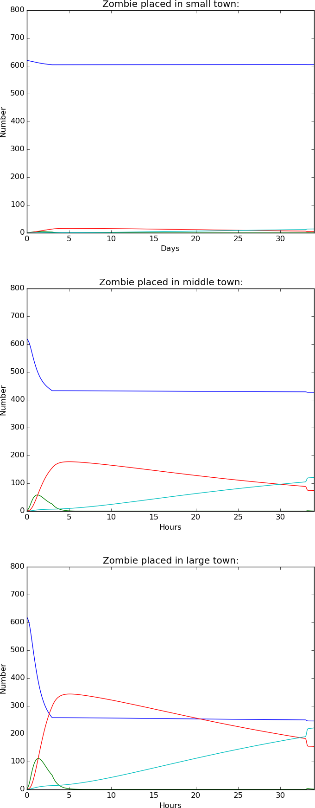
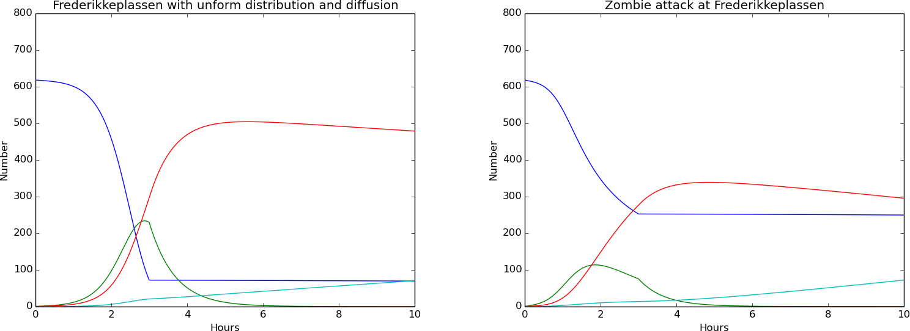
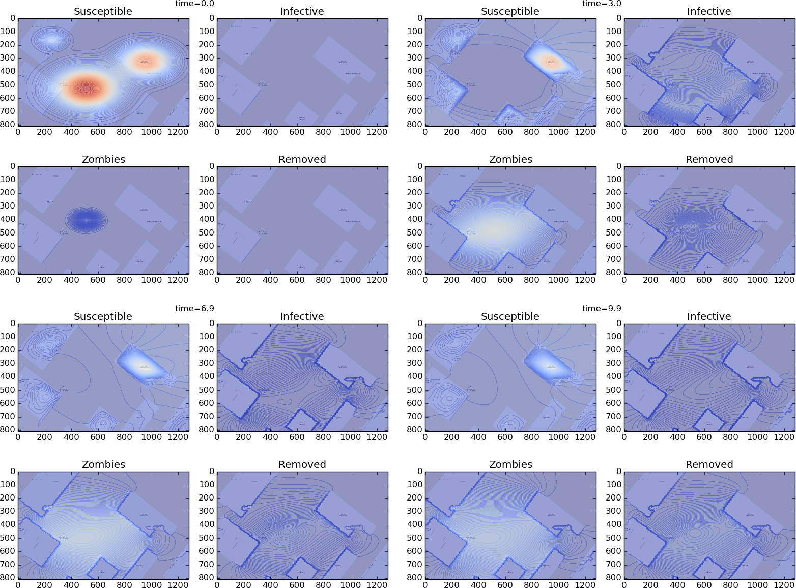
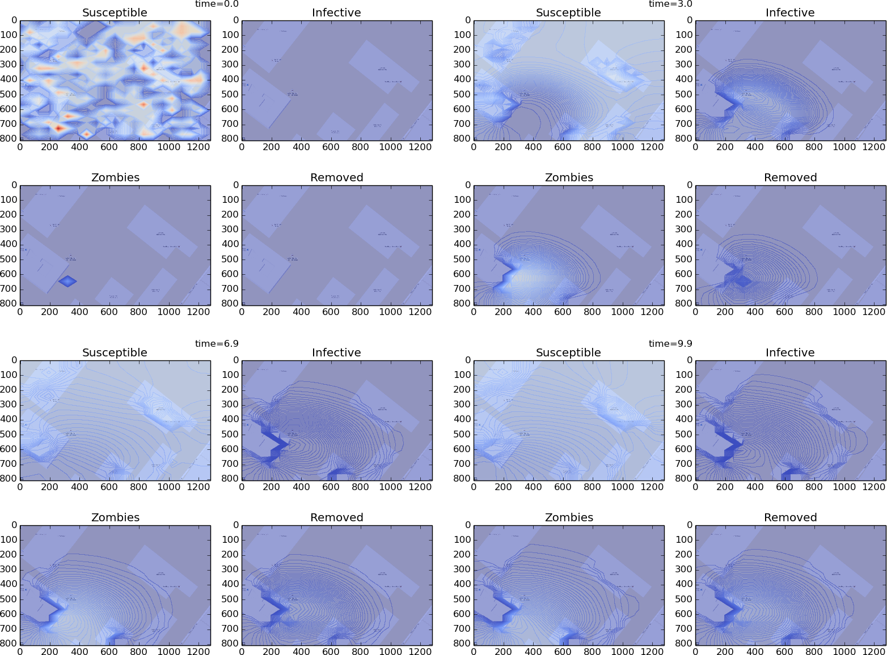

| parameter | Initial phase | hysterical phase | counter attack |
|---|---|---|---|
| \( \beta \) | 0.01155 | 0.000011 | 0.00011 |
| \( \varrho \) | 1.37 | 1.5 | 1.5 |
| \( \alpha \) | 0.00044 | 0.000208 | 0.000208 |
| a | 0 | 0 | 0.0073 |
| \( \sigma \) | 0 | 0 | 0.005 |
| \( \mu \) | 0 | 0 | 0.14 |
The simulation in figure(9) seems to match the result from the ODE system. A closer check can be done by comparing the groups in each phase. This result can be seen in (table:compare_phases_zombie)
Figure 9: The system (18) modeled with uniformed distributed classes. Initial values S_0 = 621,I_0 = 0, Z_0 = 0 R_0 = 0 with parameters from (table:param_val).

The table is measured at the final time for each phase. The Initial phase lasts for three days and the values are measured at \( time=3 \). The Hysterical phase is a lasting phase, and will not stop until an eventual eradication. This is in this case measured at \( time=33 \), before the Counter attack. This phase last for some hours, and is measured at \( time=34 \), which is a day after the attack.
| ODE system | PDE uniform dist | PDE gauss center | |
|---|---|---|---|
| Initial phase | ----------- | ------------------- | ------------------- |
| Susceptible | 71.3 | 71.5 | 81.12 |
| Infected | 230.8 | 230.6 | 210.94 |
| Zombie | 298.9 | 298.9 | 310.11 |
| Removed | 21.0 | 21.0 | 20.60 |
| Hysterical phase | ----------- | ------------------- | ------------------- |
| Susceptible | 61.6 | 61.8 | 70.55 |
| Infected | 0.3 | 0.3 | 0.34 |
| Zombie | 358.6 | 357.9 | 334.33 |
| Removed | 201.5 | 202.0 | 217.56 |
| Counter attack | ----------- | ------------------- | ------------------- |
| Susceptible | 57.8 | 58.2 | 66.50 |
| Infected | 1.2 | 1.2 | 1.23 |
| Zombie | 331.8 | 331.1 | 305.86 |
| Removed | 231.3 | 231.7 | 249.19 |
These results shows that the PDE system gives the same result as for the ODE. The small error can be explained by \( \Delta t \) and \( \Delta x \), and can be reduced to the expected error by decreasing these values.
Figure 10: The initial value for the Susceptible group for three simulations. Small group(6,6) with volume 21, middle group(12,25) with volume 200 and large group(25,12) with volume 400. All three groups are build up with a Gaussian function

The figure(11) shows the simulation where the zombie is placed in the large town. The simulations of the small and middle town can be seen in the Appendix. The four subplots are from the different phases that arise under a zombie attack. The different classes have the same color as introduced in figure(9). It is a challenge to separate the three groups Infected,*Zombie* and Removed, since they all have a low value at initial time. The development of the amount can easier be seen in the figure(12), which also shows the result from the small and middle group. Since the amount of Susceptible is quite low in the small town where the Zombie arise, the disease is not able to infect to many before the society has moved to the next phase. Assuming that the broadcasting about the disease works okay for the first days. This result in a eradication of the disease in about a month. The table(table:compare_phases_zombie) shows that the number of zombies decrease towards zero after a month.
Figure 11: Walking Dead simulated with the infected at initial time in the large town. Subplots shown at each phase.

By placing the Zombie in the middle town, the amount of zombies increase to a much higher level. The amount can be seen as the second sub figure in figure(12). The damages are higher and after a month the total population of Susceptible is reduced to 427. The last calculation done in the large town (11) shows major damages. Here the amount of Zombie increase above the number of Susceptible. The Infected class also increase to above 100 after a couple of days in the infected phase. This can be explained by the high number of meetings between susceptible and zombies. By studying the second subplot in figure(11), the zombies are grouped in the large town, while the middle and small town mostly consist of Susceptible. By counting the loss of Susceptible during the first phase, the table shows that this amount correspond to the size of the towns where the zombie was placed, given by the number 17,188 and 362 with the zombie in the small,middle and large group. The percent is highest in the middle town with 94 %. The percent in the large and small group are 90 % and 81 %. The simulation in the middle town has the highest percent because the large town also gets infected. These towns are coupled together, and the zombiefication is able to spread. The small town, which can be seen as Nesodden, has the lowest percent. This is not able to spread to the other towns, and cause less damages.
Figure 12: The values for each group counted during 34 days in Walking Dead. Initial phase from day 0 to day 3, Hysterical phase from day 3 to day 33 and Counter attack from day 33 to day 34.

The result from the uniformed distributed simulation still is much higher for the Zombie class then for the large town. This shows that by using the parameters from the ODE system in a geographic area give no sense. A realistic assumption is that a zombie is restricted to a given area. Therefore the parameters will not be equal for all. The chance of getting infected is much higher if a susceptible is closed to an infected. There is also a greater chance of getting infected if the susceptible stay in a crowded area.
| Small town | Middle town | Large | |
|---|---|---|---|
| Initial phase | ----------- | ------------------- | ------------------- |
| Susceptible | 603.74 | 433.22 | 259.20 |
| Infected | 2.96 | 25.51 | 50.94 |
| Zombie | 13.79 | 155.27 | 297.24 |
| Removed | 0.66 | 7.16 | 13.78 |
| Hysterical phase | ----------- | ------------------- | ------------------- |
| Susceptible | 604.42 | 429.35 | 251.14 |
| Infected | 0.03 | 0.18 | 0.35 |
| Zombie | 6.25 | 87.31 | 178.45 |
| Removed | 12.14 | 106.00 | 192.90 |
| Counter attack | ----------- | ------------------- | ------------------- |
| Susceptible | 604.21 | 427.45 | 247.33 |
| Infected | 0.08 | 0.59 | 1.17 |
| Zombie | 4.49 | 73.70 | 151.44 |
| Removed | 14.11 | 121.16 | 222.96 |
The diffusion term is the difference between this system and system(16). The discretization can be shown for for a general \( \gamma \). This will be similar for all classes. A Crank Nicolson discretization is used in space. $$ \begin{equation} \tag{20} \begin{aligned} &=\nabla(\gamma(x) \nabla S) \\ &=(\gamma(x) S_x)_x+(\gamma(x) S_y)_y \\ &= \left(\gamma(x) \frac{S^{n}_{i+1/2,j}-S^{n}_{i-1/2,j}}{\Delta x}\right)_x+\left(\gamma(x) \frac{S^{n}_{i,j+1/2}-S^{n}_{i,j-1/2}}{\Delta y}\right)_y \\ &= \left(\frac{\gamma(x_{i+1/2,j})(S^{n}_{i+1,j}-S^{n}_{i,j})-\gamma(x_{i-1/2,j})(S^{n}_{i,j}-S^{n}_{i-1,j})}{\Delta x^2}\right)+\left(\frac{\gamma(x_{i,j+1/2})(S^{n}_{i,j+1}-S^{n}_{i,j})-\gamma(x_{i,j-1/2})(S^{n}_{i,j}-S^{n}_{i,j-})}{\Delta y^2}\right) \end{aligned} \end{equation} $$ Since the calculation is based on spatial points, the values inside the function of \( \gamma \) need to be adjusted. This can be done by an aritmetic mean. This can be seen in eq(21). The writing \( q_{i+1/2} \) is used for the function \( q(x_{i+1/2}) \) with \( x_{i+1/2} = x_i + 1/2 \Delta x \) $$ \begin{equation} \tag{21} q_{i+1/2} \approx \frac{1}{2}(q_i +q_{i+1}) \end{equation} $$ This arithmetic mean can be inserted for all \( \gamma \)'s in the system.By cleaning up, the system can be expressed. $$ \begin{equation} \tag{22} \begin{aligned} S^{n+1}_{i,j} &= S^n_{i,j} + \Delta t \left( \Sigma - (\beta+\mu \omega(t))S^{n}_{i,j}Z^{n}_{i,j}- \delta_S S^{n}_{i,j}+\ \frac{1}{2\Delta x^2}\left(\gamma_S(x_{i-1,j})(S^{n}_{i-1,j}-S^{n}_{i,j})+\gamma_S(x_{i,j})(S^{n}_{i-1,j}-2S^{n}_{i,j}+S^{n}_{i+1,j})+\gamma_S(x_{i+1,j})(-S^{n}_{i,j}+S^{n}_{i+1,j})\right)+\ \frac{1}{2\Delta y^2}\left(\gamma_S(x_{i,j-1})(S^{n}_{i,j-1}-S^{n}_{i,j})+\gamma_S(x_{i,j})(S^{n}_{i,j-1}-2S^{n}_{i,j}+S^{n}_{i,j+1})+\gamma_S(x_{i,j+1})(-S^{n}_{i,j}+S^{n}_{i,j+1})\right)\right)\\ I^{n+1}_{i,j} &= I^n_{i,j} + \Delta t \left((\beta+\mu \omega(t))S^{n}_{i,j}Z^{n}_{i,j}-\varrho I^{n}_{i,j}- \delta_I I^{n}_{i,j}+\ \frac{1}{2\Delta x^2}\left(\gamma_I(x_{i-1,j})(I^{n}_{i-1,j}-I^{n}_{i,j})+\gamma_I(x_{i,j})(I^{n}_{i-1,j}-2I^{n}_{i,j}+I^{n}_{i+1,j})+\gamma_I(x_{i+1,j})(-I^{n}_{i,j}+I^{n}_{i+1,j})\right)+\ \frac{1}{2\Delta y^2}\left(\gamma_I(x_{i,j-1})(I^{n}_{i,j-1}-I^{n}_{i,j})+\gamma_I(x_{i,j})(I^{n}_{i,j-1}-2I^{n}_{i,j}+I^{n}_{i,j+1})+\gamma_I(x_{i,j+1})(-I^{n}_{i,j}+I^{n}_{i,j+1})\right)\right)\\ Z^{n+1}_{i,j} &= Z^n_{i,j} +\Delta t \left( \varrho I^{n}_{i,j}-(\alpha+\omega(t))S^{n}_{i,j}Z^{n}_{i,j}+ \zeta R^{n}_{i,j}+\ \frac{1}{2\Delta x^2}\left(\gamma_Z(x_{i-1,j})(Z^{n}_{i-1,j}-Z^{n}_{i,j})+\gamma_Z(x_{i,j})(Z^{n}_{i-1,j}-2Z^{n}_{i,j}+Z^{n}_{i+1,j})+\gamma_Z(x_{i+1,j})(-Z^{n}_{i,j}+Z^{n}_{i+1,j})\right)+\ \frac{1}{2\Delta y^2}\left(\gamma_Z(x_{i,j-1})(Z^{n}_{i,j-1}-Z^{n}_{i,j})+\gamma_Z(x_{i,j})(Z^{n}_{i,j-1}-2Z^{n}_{i,j}+Z^{n}_{i,j+1})+\gamma_Z(x_{i,j+1})(-Z^{n}_{i,j}+Z^{n}_{i,j+1})\right)\right)\\ R^{n+1}_{i,j} &= R^n_{i,j} +\Delta t \left(\delta_S S^{n}_{i,j}+\delta_I I^{n}_{i,j}-\zeta R^{n}_{i,j}+(\alpha+\omega(t))S^{n}_{i,j}Z^{n}_{i,j}\right) \end{aligned} \end{equation} $$ The diffusion term for the Removed class is take away, since dead people are not able to move. This system looks quite messy, but it is straight forward to calculate. All values on the right side are known values and the system is easy to solve. Now every point will be controlled by its diffusion constant. This makes it easier to control the flow in each class. With a high diffusion constant, the diffusion will spread fast. When the diffusion constant goes towards zero, the flow will decrease towards zero flow. This will result in a set of ODE systems modeled for each point.
Figure 13: The amount in each group for two simulations of Frederikkeplassen modeled same parameters for 10 minutes/hours. a)Plot with uniformed distributed groups and same diffusion constants for all classes. b)Plot based on figure(14) with different initial values for each group.

Two simulations have been done on Frederikkeplassen. The amount in each group can be seen in figure(13). The first simulation has a solution based on the ODE system, with uniformed distributed classes, equal diffusion constants and no free areas for the Susceptible. The second simulation is model with three groups of Susceptible, as in the previous Section. The small group with 21 students is placed at point(4,4), the middle group with 200 students is placed at point(15,8) and the large group with 400 students is placed at point(8,13). The zombie is placed at point(8,10). The \( \gamma(x) \) is sat to zero in the buildings for the Zombie and Infected class, and one in the rest of the area. For the Susceptible class, \( \gamma(x) \) is sat to 0.1 in the buildings, which causing slow diffusion. In the areas, the \( \gamma(x) \) is sat to 5 for the Susceptible. The desired idea is to push them into the buildings, but this will only happen if there is a lower concentration inside the buildings. Therefore this will not reflect a realistic flow of a Susceptible population. This simulation can be seen in figure(14)
Figure 14: Frederikkeplassen modeled with free areas for the Susceptible group. The diffusion function \( \gamma(x) \) is sat to zero for the Zombie and Infected group in the buildings. The zombie at initial time is placed in the center of Frederikkeplassen

The numbers in table(table:frederikke_table) shows that the three first minutes are the crucial phase. The number after three minutes shows only that only 72 humans survived the attack in the uniformed solution,compared to 252 in the free areas, even more in the simulation with the random placement. But the number of Susceptible is quite similar measured at \( t=3 \). But at \( t=7 \), the difference is major. This can be explained by looking at figure(14) and the building with the middle group placed inside. When the zombie starts attacking at \( t=0 \), the large group is exposed. This group is placed close to the zombie and the position is in an open area. The zombie can attack right away and the number of infected and zombies increase fast. In the two first minutes, a major part of the large group is infected and the Zombie group starts to spread. After 2-3 minutes, the group has reaced the buildings with the middle group. But they are not able to diffuse in. Since the diffusion variable is quite low inside the building for the Susceptible, it takes time before the group diffuses out. Maybe the right diffusion value along the buldings would be 0, to avoid any leakage. This will again cause the problem that no Susceptible can move in. It is also reasonable to think that the Susceptible group needs to diffuse out. The lack of suplies would force them out.
| Uniform distribution | Free areas | Random placement | |
|---|---|---|---|
| 3 Minutes | --------------------------- | --------------- | ---------------- |
| Susceptible | 72.23 | 252.72 | 524.77 |
| Infected | 229.65 | 75.69 | 26.07 |
| Zombie | 296.67 | 276.55 | 66.51 |
| Removed | 20.84 | 13.94 | 3.66 |
| 7 Minutes | --------------------------- | --------------- | ---------------- |
| Susceptible | 70.78 | 251.35 | 524.23 |
| Infected | 0.83 | 0.51 | 0.20 |
| Zombie | 498.72 | 325.54 | 81.88 |
| Removed | 49.12 | 41.26 | 14.80 |
| 10 Minutes | --------------------------- | --------------- | ---------------- |
| Susceptible | 69.69 | 249.84 | 523.61 |
| Infected | 0.25 | 0.38 | 0.16 |
| Zombie | 479.00 | 295.71 | 69.67 |
| Removed | 70.55 | 72.36 | 27.77 |
Figure 15: Random position of the Susceptible and Zombie class. Simulated with free areas inside the buildings.
